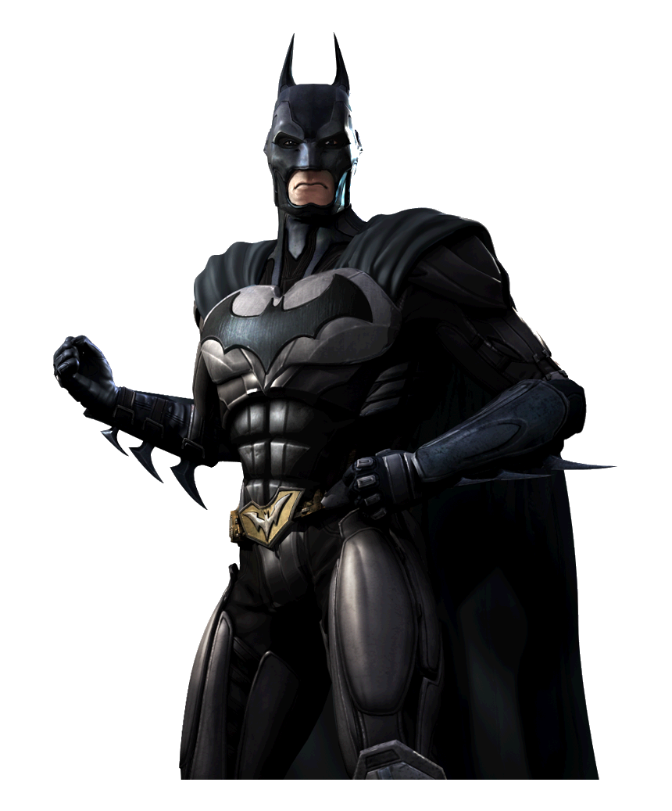
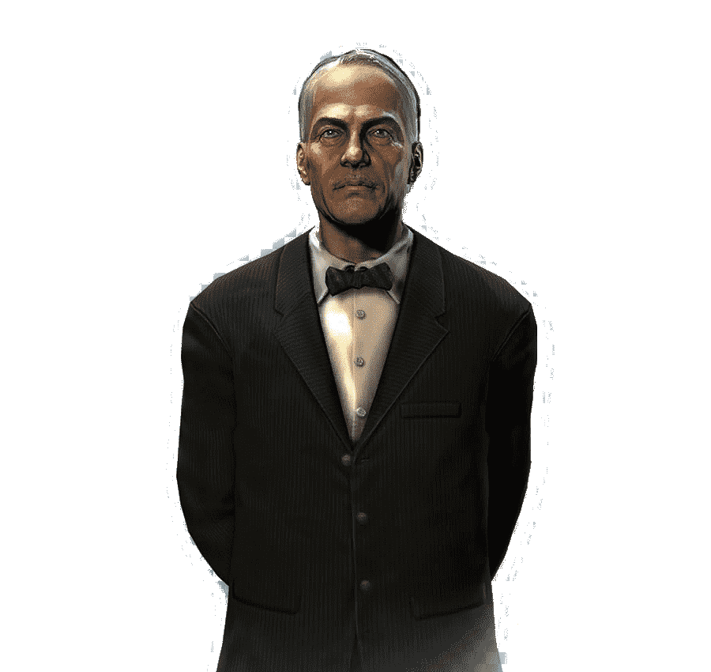
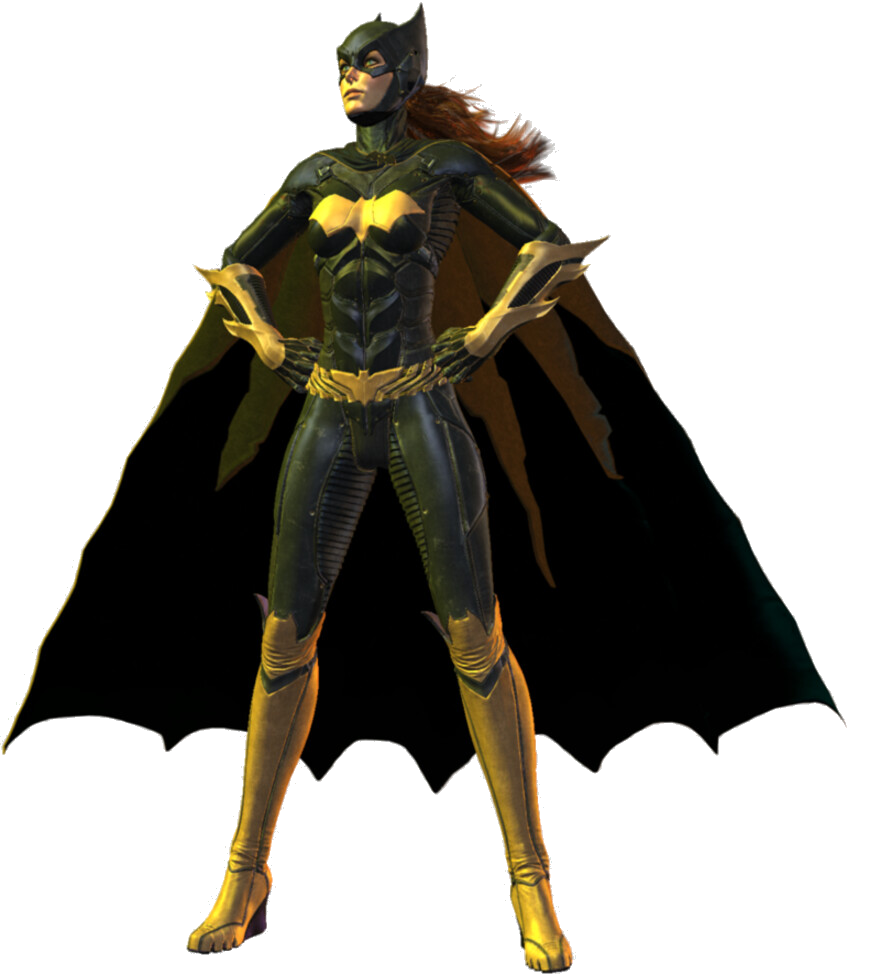
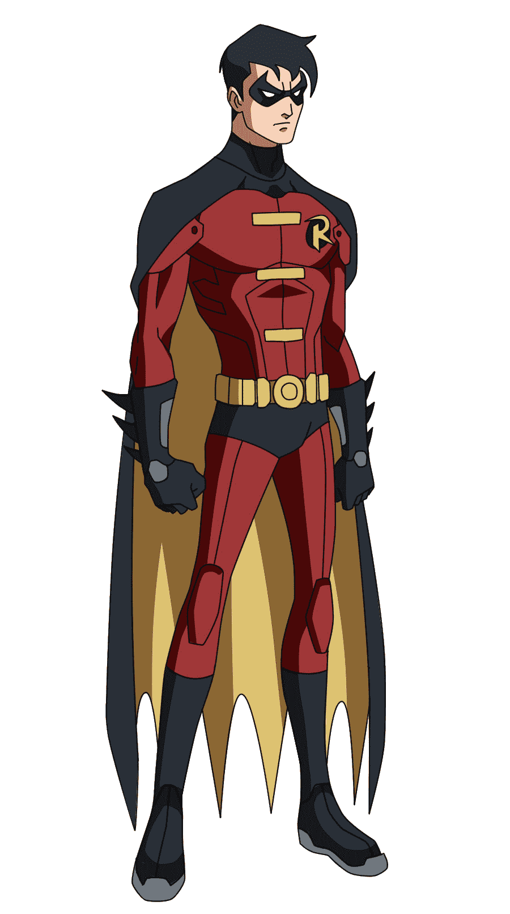

La Bati familiabien podria ser definida como una red de superhéroes de mentalidad similar que operan en y alrededor de Ciudad Gótica, con Batman a la cabeza.
| Imagen. | ALIAS | ESTATURA | PESO | Nombre Real | Primera aparición | Historia |
|  | BATMAN | 1,88 m | 95 kg | Bruce Wayne | Detective Comics #27 (Mayo de 1939) | Batman es la identidad secreta de Bruce Wayne, un empresario multimillonario, galán y filántropo. Presenció el asesinato de sus padres cuando era niño lo marcó profundamente y lo llevó a entrenarse en la perfección física e intelectual para ponerse un disfraz de murciélago con el fin de combatir el crimen. Batman trabaja en Ciudad Gótica, con la asistencia de varios personajes de apoyo, incluidos su compañero Robin y su mayordomo Alfred Pennyworth. |
|  | “Alfred” | -N/A- | -N/A- | Alfred Thaddeus Crane Pennyworth | Batman #16 | Alfred tuvo dos orígenes: uno fue el que crió a Bruce Wayne desde que sus padres fueron asesinados y la otro él entró en la vida de Bruce Wayne después de haber adoptado a Dick. Alfred vivió con los Wayne durante meses sin saber que eran Batman y Robin. Una noche, él oyó un grito proveniente del viejo reloj, lo abrió y descubrió la entrada a la Batcueva |
|  | “Batgirl” | 1,70 m | 61 kg | Barbara Gordon. | Como Batgirl:' Detective Comics #359 (Enero 1967) como Oráculo: Suicide Squad #23 (Enero 1989) Retorno como Batgirl: Batgirl Vol 4 #1 (Septimbre, 2011) | Barbara Gordon, la hija del Comisario James Gordon es una bibliotecaria de día y un espíritu justiciero por la noche. Mientras se dirigía a un baile de disfraces vestida como una versión femenina de Batman, Barbara Gordon interviene en un intento de secuestro de Bruce Wayne por el villano Killer Moth, atrayendo la atención del Caballero Oscuro lo que la termina conduciendo a una carrera de lucha en contra del crimen. |
|  | “Robin, /Nightwing” | 1,78 m | 79kg | Dick Grayson | Detective Comics #38 | Dick Grayson era un niño de doce años de edad que vivía en un circo de acróbatas, siendo el más joven de los Grayson Voladores. Mientras estaba de gira en Gotham City, escuchó a Tony Zucco, un conocido y temido señor del crimen, amenazando al dueño del circo de pagarle un soborno a cambio de protección. El propietario se negó, y a la noche siguiente Dick contemplo con horror como el alambre de sus padres se rompía en las alturas, enviándolos a toda velocidad hacia la muerte, a vistas de la élite de Gotham, entre los que estaban Bruce Wayne y Tim Drake. |